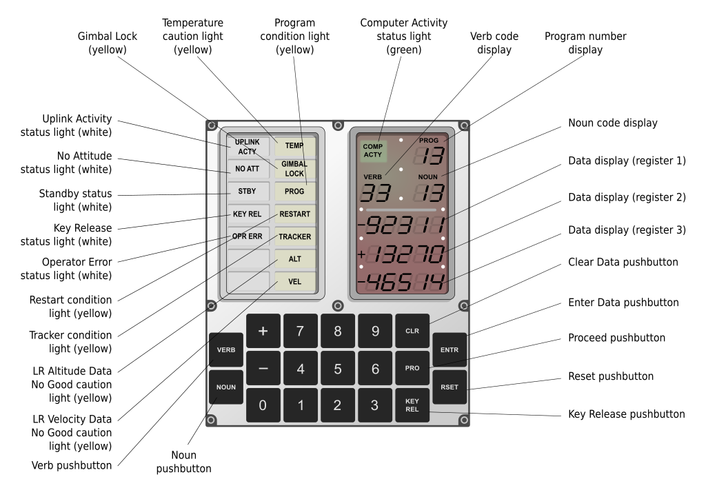

Restarting the Computer

The Challenge Nobody Planned For
No Command Module had ever been turned off in flight — and no procedure existed for turning one back on.
The Problem:
- ❌ No restart procedure existed — the CM was built to stay powered from launch to splashdown
- ❌ Cold soak: the cabin sat near 38°F for almost 3½ days, below the electronics' rated specs
- ❌ Condensation: water beaded on every panel — and probably on the wiring behind them. Power plus water can mean short circuits
- ❌ Stale navigation: the guidance platform had lost its alignment, and the position data in the computer was days out of date
- ❌ The clock: once power-up began, about 2½ hours until Odyssey hit the atmosphere — ready or not
The Apollo Guidance Computer (AGC)
🧲 Myth Buster: The Computer Never Forgot
You might expect that cutting power for 81 hours would erase the computer's memory. It didn't — and the reason is beautiful.
The AGC stored information on magnetic cores — thousands of tiny metal rings, each holding one bit as a magnetic field. Its programs (72KB) were literally woven by hand, wires threaded through and around the cores. Its 4KB of working memory was magnetic core too. And magnetic cores don't care whether the power is on. Nothing was erased.
Proof: after power-up, Houston had the crew key in Verb 74, dumping the computer's working memory to the ground over telemetry. Every bit had survived 3½ days without power.
What really was lost:
- ❌ Platform alignment: with its gyros powered down, the spacecraft no longer "knew" which way it was pointing
- ❌ A fresh state vector: the stored position and velocity were days old — useless for entry
Both had to be rebuilt: new numbers radioed up from Houston and typed into the DSKY keyboard digit by digit, and the platform realigned and checked against the stars.
🖥️ 1969's Finest Computer
- Memory: 4KB of working memory + 72KB of woven program memory
- Speed: about 40,000 instructions per second
- Size: 70 pounds, drawing 55 watts
Your phone is millions of times more powerful. But the AGC was enough to fly to the Moon — and during entry it would do a job no human could do by hand: steer Odyssey down the narrow entry corridor, holding the heat shield into the fire and adjusting continuously all the way to parachute deploy.
❄️ The Real Restart Risks: Water and Cold
Water. For days, the crew's breath had condensed on every cold surface. Jim Lovell described the cabin: "The walls, ceiling, floor, wire harnesses and panels were all covered with droplets of water." Send current through a wet circuit and you can get a short — a spark, blown components, drained batteries, no computer for entry.
Cold. At 38°F, the electronics were below their rated temperatures. Solder joints contract, seals stiffen — and nobody knew for certain what 3½ freezing days had done inside the boxes.
NASA's Answer: A Lean, Exact Sequence
- ✓ Bring systems up one at a time, in an order that wastes nothing
- ✓ Watch the current meters — a sudden spike means a short: stop immediately
- ✓ Stay inside the entry batteries' power budget (nearly full, thanks to a jury-rigged recharge from the Lunar Module) with margin for surprises
Who Wrote the Impossible Checklist?
In Mission Control, power expert John Aaron led the "tiger team" that built the power-up sequence amp by amp, while Arnie Aldrich stitched the steps into one master checklist. Ken Mattingly — bumped from the crew days before launch over German measles he never caught — flew the procedure again and again in the Command Module simulator until it worked.
Radioing the finished checklist up to Jack Swigert took about two hours. He copied every step by hand.
"Flight controllers wrote the documents for this innovation in three days, instead of the usual three months." — Jim Lovell, "Houston, We've Had a Problem" (NASA)
Three Months of Work in Three Days
Engineers wrote a procedure that had never existed.
Now the crew had to run it — cold, exhausted, with 2½ hours on the clock.
Next: the power-up.